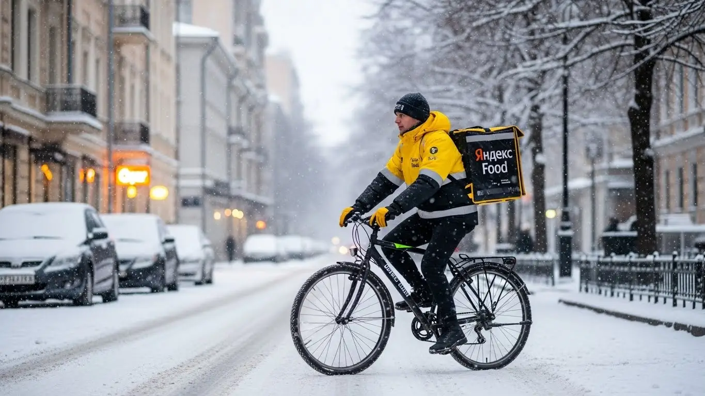
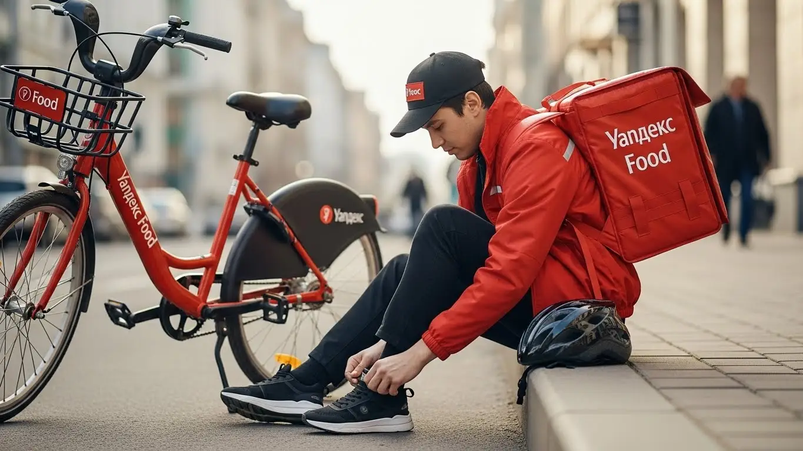
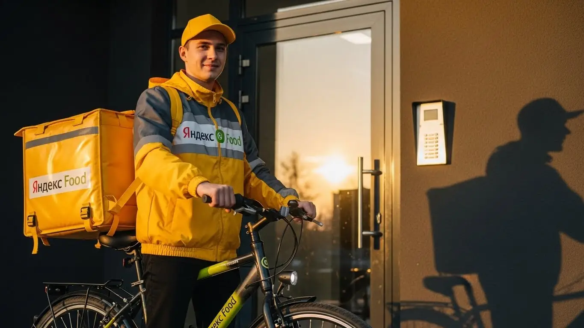

Работа курьером Яндекс Еда в Омске: доход и условия 2025-2026

- Работа курьером Яндекс Еды в Омске: для кого эта вакансия и что вы получите
- Сколько вы будете зарабатывать курьером в Омске: калькулятор дохода и разбор выплат
- Реальный заработок курьера в Омске: смены и месячный доход
- График работы и форматы занятости
- Требования к кандидату и документы
- Самозанятость, налоги и юридическая чистота
- Пошаговое оформление и первый выход на линию в Омске
- Пешком, на вело или на авто: что выгоднее в Омске
- Районы, маршруты и «топовые» зоны заказов в Омске
- Безопасность, страховка, штрафы и оплата простоя
- Плюсы и возможные минусы работы курьером в Омске
- Реальные истории и отзывы курьеров из Омска
- Ответы на главные вопросы о работе курьером Яндекс Еды в Омске
- Короткие ответы на главные вопросы
- Заключение: твой следующий шаг в Омске
Все города
Здорово, земляк! Думаешь, работа курьером в Омске — это просто сел на велик или в машину и поехал зарабатывать лёгкие деньги? Как бы не так. В реальности ты можешь часами стоять в пробке на Маркса, убивать подвеску на дорогах Нефтяников или пытаться в минус тридцать довезти горячую пиццу, а в итоге увидеть в приложении совсем не ту сумму, на которую рассчитывал. Это не реклама, это — реальность, с которой сталкивается каждый новичок в нашем городе.
Без понимания омской «кухни» можно быстро разочароваться и бросить всё в первый же месяц. Ведь доход — это не просто цена заказа. Это минус бензин или амортизация велосипеда, минус налог самозанятого, и всё это умноженное на хитрый рейтинг, приоритет и знание, почему заказ с Левого берега в центр не всегда выгоден. Чтобы заранее оценить условия, увидеть актуальные цифры и воспользоваться калькулятором дохода, загляните на официальную страницу: работа курьером Яндекс Еда в Омске. Большинство новичков в нашем городе наступают на одни и те же грабли: гоняются за «жирными» заказами вслепую, не учитывают нашу погоду и теряют деньги на простоях.
В этом гиде мы всё разложим по-честному. Разберём, что лучше выбрать для Омска — пеший формат, велосипед или своё авто, и какие у каждого варианта подводные камни. Посчитаем, сколько чистыми остаётся в кармане после всех расходов. Выясним, в каких районах реально есть спрос, а где — «мёртвые зоны». Покажу на примерах, как омская зима и летний зной влияют на заработок, и расскажу про реальные штрафы и как их не словить.
Меня зовут Алексей. Я сам не один год откатал курьером по Омску, от центра до самых окраин, а сейчас держу свой небольшой таксопарк-партнёр. Так что я видел эту систему со всех сторон. Никакой рекламной шелухи и обещаний золотых гор не будет — только мясо, реальный опыт и цифры, актуальные именно для нашего города. В общем, присаживайся поудобнее. Сейчас всё разложу по полочкам.
Чтобы тебе было проще сориентироваться, сначала пробежимся по ключевым моментам в формате короткого гида.
Что ты точно узнаешь из этого разбора по-омски
В этой статье ты ТОЧНО узнаешь:
- Сколько реально можно заработать в Омске за смену на машине, велосипеде или пешком с учётом местных реалий.
- В каких районах Омска (от Центра до Левобережья) больше всего заказов и где самые высокие коэффициенты.
- Как правильно выбирать слоты и зоны в приложении «Яндекс Про», чтобы не кататься впустую и не стоять без дела.
- За что на самом деле могут снизить рейтинг или заблокировать, и как избежать типичных ошибок новичков.
- Что такое самозанятость для курьера, сколько платить налогов и почему это проще и выгоднее, чем кажется на первый взгляд.
- Как работает оплата простоя, если заказов мало, и что покрывает бесплатная страховка на сменах.
А если тебе некогда читать всю статью — переходи сразу к заключению, где ты найдёшь короткие ответы на все эти вопросы и указания, в каких разделах искать подробности.
А вот наглядная инфографика, чтобы сразу увидеть главные цифры.
Работа курьером в Омске: ключевые цифры
Доход в час
350-500 ₽
В часы высокого спроса и с бонусами
За смену (8 часов)
2800-4000 ₽
Зависит от района, погоды и дня недели
Чаевые от клиентов
~15%
Доля заказов с чаевыми, которые полностью ваши
Работа курьером Яндекс Еды в Омске: для кого эта вакансия и что вы получите
Сразу к делу: работа курьером — это не просто «взял пакет, отнёс пакет». В Омске, как и в любом миллионнике, это возможность получить живые деньги здесь и сейчас, ценя свободный график и независимость от начальника. Это работа, где твой доход напрямую зависит от твоей скорости, сообразительности и желания работать. Если ты готов двигаться и ценишь свободу, то эта вакансия для тебя.

Кому подойдёт эта работа в Омске
Эта работа максимально универсальна. Я вижу на линии совершенно разных людей, и для каждого находятся свои плюсы. В первую очередь, это отличный вариант для студентов омских вузов, например, ОмГУ или Политеха. Можно легко совмещать с учёбой: откатал пару часов после пар — и вот у тебя уже есть деньги на вечер или на выходные. Никаких проблем с сессией, просто ставишь меньше смен.
Также это идеальная подработка для тех, у кого уже есть основная работа. Если ты работаешь два через два или у тебя остаются свободные вечера, можно выходить на линию и получать дополнительный доход. Многие мои знакомые водители такси так делают: нет заказов по такси — переключился на доставку. И, конечно, это хороший старт для тех, у кого пока нет опыта работы. Здесь не нужен диплом или резюме на пять страниц, главные требования — ответственность и умение ориентироваться в городе.
Главные преимущества для жителей районов Кировский, Советский, Центральный
Главный кайф этой работы в том, что ты можешь зарабатывать прямо у себя под окнами. Не нужно тратить час-полтора на дорогу до офиса через весь Омск. Живёшь на Левом берегу в Кировском округе? Отлично, здесь куча заказов из ТЦ «МЕГА» и окрестных кафе. Вышел из дома, включил приложение «Яндекс Про» и через пять минут уже выполняешь первую доставку.
То же самое касается и жителей Советского округа. В районе Нефтяников и у городка Водников всегда высокий спрос, особенно в вечернее время. Ты знаешь каждый двор и каждый подъезд, а значит, будешь выполнять заказы быстрее, чем кто-либо другой. Для тех, кто живёт в Центральном округе, вообще раздолье — тут самая высокая концентрация ресторанов и офисов, заказы идут практически без остановки, особенно в обеденное время. Работая в своём районе, ты экономишь время, силы и деньги на проезд.
Краткое обещание по доходу и условиям
Теперь о главном — о деньгах. В Омске активный курьер за полную 8-10 часовую смену может зарабатывать в среднем от 2500 до 4500 рублей. Курьер на автомобиле при хорошей загрузке делает и больше. Если рассматривать это как подработку на 3–4 часа в день, то можно рассчитывать на 1000–1800 рублей. В месяц при полной занятости вполне реально выходить на 70 000–90 000 рублей и выше, особенно если работать на машине.
Ключевые условия работы просты и понятны: тебе не нужен опыт, у тебя полностью свободный график, который ты составляешь сам, а ежедневные выплаты приходят на карту. Чаще всего для работы требуется статус самозанятого, но его оформление занимает 10 минут онлайн. Всё, что нужно для старта — это смартфон и желание зарабатывать. Даже термокороб для доставки еды предоставят партнёры сервиса.
Сколько вы будете зарабатывать курьером в Омске: калькулятор дохода и разбор выплат
Многих новичков пугает, что заработок кажется непредсказуемым. На самом деле, система абсолютно прозрачна, и твой доход — не случайная цифра, а результат сложения нескольких понятных компонентов. Если разобраться, как формируется зарплата курьера, можно легко прогнозировать свой заработок и влиять на него. Давай разберём по косточкам, из чего складываются твои деньги.
Из чего складывается доход курьера
Твой итоговый заработок за смену формируется из нескольких частей. Во-первых, это базовая оплата за каждый выполненный заказ. Во-вторых, к ней прибавляется доплата за расстояние — чем дальше везти, тем больше денег ты получишь. Система рассчитывает оптимальный маршрут, и каждый километр этого пути оплачивается.
Третий и самый важный компонент — повышающие коэффициенты. В часы пик (обед с 12 до 15, ужин с 18 до 21), в выходные или в плохую погоду, когда в Омске идёт дождь или сильный снегопад, спрос на доставку резко растёт. В приложении «Яндекс Про» такие зоны подсвечиваются фиолетовым, и стоимость каждого заказа в них умножается на коэффициент. Кроме того, есть персональные бонусы за выполнение определённого числа заказов и, конечно, чаевые от клиентов, которые полностью достаются тебе. А ещё сервис Яндекс Еда защищает твой доход: если ты вышел на запланированный слот, а заказов мало, тебе начислят оплату за простой.
Как пользоваться калькулятором дохода
Чтобы прикинуть свой потенциальный заработок, на сайте есть специальный калькулятор. Пользоваться им проще простого. Сначала ты выбираешь свой город — Омск. Затем указываешь, как планируешь доставлять заказы: как пеший курьер, велокурьер или на личном автомобиле.
После этого выставляешь предполагаемый график: сколько часов в день и сколько дней в неделю ты готов работать. На основе этих данных и средних показателей по Омску калькулятор покажет тебе примерный дневной и месячный доход. Это, конечно, ориентировочные цифры, но они дают хорошее представление о том, на что можно рассчитывать. Поиграйся с разными вариантами, чтобы понять, какой график для тебя будет самым выгодным.
Прикинь свой доход курьером в Омске
Твой примерный доход в месяц:
Это ориентировочный расчёт. Реальный заработок зависит от спроса, погоды, твоего рейтинга и персональных бонусов.
Примеры расчёта для пешего, вело- и авто‑курьера в Омске
Давай посмотрим на конкретных примерах, сколько можно заработать в Омске.
- Пеший курьер в центре. Допустим, ты работаешь 4 часа в день в районе улицы Ленина и Любинского проспекта. Здесь много коротких заказов «из кафе в офис». За смену ты легко сделаешь 8–10 заказов. Средний чек за заказ с учётом небольшого расстояния — 150–180 рублей. Итог за день: около 1200–1500 рублей.
- Велокурьер в спальных районах. Ты работаешь 6 часов, курсируя между Кировским и Советским округами. На велосипеде ты быстрее пешего, поэтому можешь брать заказы на большее расстояние. За смену можно выполнить 12–15 заказов. С учётом доплаты за километраж твой доход составит примерно 2200–2800 рублей.
- Курьер на своем авто по всему городу. Ты работаешь полную смену, 8–10 часов, и готов ехать в любую точку Омска. На машине ты берёшь самые дорогие, дальние заказы из Яндекс Еды и Яндекс Доставки, можешь выполнять несколько доставок одновременно. Особенно выгодно работать в непогоду, когда коэффициенты максимальные. За такой день можно заработать от 3500 до 5000 рублей и даже больше.
Из практики: у меня есть знакомый водитель, который целенаправленно выходит на линию в сильные морозы или снегопады. Пока другие сидят дома, он за 8-часовую смену в субботу спокойно делает 6000-7000 рублей, потому что заказов море, а конкуренции почти нет.
Как видишь, твой заработок — это не просто ставка, а сумма многих факторов. Главное — понимать, как они работают. Всегда следи за картой спроса в приложении, не бойся плохой погоды и выбирай тот тип доставки, который позволит тебе быть максимально эффективным.
Эти примеры помогут сориентироваться, а чтобы увидеть самые актуальные условия и самому посчитать доход, загляни на официальную страницу: работа курьером Яндекс Еда в твоём городе. Там всегда свежие цифры, подробный FAQ и форма для быстрой онлайн-заявки.
Реальный заработок курьера в Омске: смены и месячный доход
Перейдём к самому главному, без рекламных обещаний. Всех волнует вопрос — сколько денег можно поднять, работая курьером в Яндекс Еде или Доставке в Омске. Цифры, которые я назову, — это не выдумки, а реальность для моих парней и для меня, когда я сам выхожу на линию. Твой доход — это не фиксированная зарплата, а результат твоей скорости, смекалки и умения быть в нужном месте в нужное время.
В Омске есть своя специфика: город-миллионник, растянутый вдоль Иртыша, с чётким разделением на деловой центр и огромные спальные районы на Левом берегу и в Нефтяниках. Это создаёт как сложности, так и возможности. Понимание этих нюансов напрямую влияет на то, сколько ты привезёшь домой в конце дня. В среднем, активный курьер в нашем городе может рассчитывать на доход выше средней зарплаты по региону, но для этого придётся покрутить педали или руль.
Диапазон дохода для подработки и полной занятости
Если ты ищешь подработку на 2–4 часа в день, чтобы закрыть расходы на учёбу или просто иметь карманные деньги, цифры будут одни. Если же ты готов работать полный день, как на основной работе, — совсем другие.
Подработка (2–4 часа в день):
- Пеший или велокурьер: Идеальный вариант для студентов. Выходишь на 3–4 часа в вечерний пик, например, с 18:00 до 22:00. За такую смену в Омске реально сделать 800–1500 рублей. Если кататься 4–5 дней в неделю, в месяц набегает 15 000 – 25 000 рублей.
- Автокурьер: На машине за то же время доход выше за счёт скорости и дальности заказов. За 4-часовой слот можно заработать 1200–2000 рублей. В месяц это уже 25 000 – 40 000 рублей чистыми, если подрабатывать регулярно.
Полная занятость (8–10 часов в день):
- Пеший или велокурьер: Работая по 8 часов 5 дней в неделю, можно выйти на доход в 2500–4000 рублей за смену. В месяц это превращается в 50 000 – 75 000 рублей. Это уже серьёзные деньги, требующие выносливости.
- Курьер на автомобиле: Здесь самые высокие доходы. При полной занятости дневной заработок составляет 4000–6000 рублей. Стабильно работающий водитель-курьер в Омске может зарабатывать 80 000 – 120 000 рублей в месяц. Важно помнить, что это «грязными», до вычета расходов на бензин и обслуживание машины.
Как район, время суток и погода влияют на доход
Твой заработок — это не просто ставка за час, он постоянно меняется. Три главных фактора, которые его определяют: где, когда и в какую погоду ты работаешь.
Район и время. Самые «жирные» часы — это обед (с 12:00 до 14:00) и ужин (с 18:00 до 21:00). В это время в приложении «Яндекс Про» карта горит фиолетовым — это зоны повышенного спроса с высокими коэффициентами. В Омске это, в первую очередь, Центральный округ: улицы Ленина, проспект Карла Маркса, район у ТЦ «Омский», где много заказов из Яндекс Еды. Вечерами и в выходные отлично «стреляют» спальные районы Левобережья (Кировский округ), особенно вблизи ТЦ «Мега» и «Континент», а также Советский округ в районе Нефтяников.
Погода. Для курьера плохая погода — лучший друг. Как только в Омске начинается дождь, сильный ветер или, что ещё лучше, снегопад, происходит две вещи: количество заказов резко растёт, а число курьеров на линии падает. Спрос превышает предложение, и сервис вводит максимальные повышающие коэффициенты. Вдобавок клиенты становятся щедрее на чаевые, потому что ценят твою работу в таких условиях. Один дождливый вечер пятницы может принести столько же, сколько два обычных будних дня.
Советы по увеличению заработка от опытных курьеров
Чтобы зарабатывать больше, не обязательно работать сутками. Нужно работать с головой. Вот несколько проверенных советов.
Во-первых, выбирай правильные слоты. Не бери длинный 10-часовой слот с утра до вечера. Гораздо выгоднее взять два коротких, но в пиковые часы: например, с 11:00 до 15:00 и с 18:00 до 22:00. Так ты не будешь простаивать в «мёртвые» часы днём.
Во-вторых, изучи свой район. Не гоняйся за фиолетовыми зонами по всему городу. Выбери одну-две локации, которые знаешь как свои пять пальцев. Например, работая в центре, ты будешь знать все арки, дворы и служебные входы, что сэкономит тебе кучу времени. Знание района — это твои деньги.
В-третьих, будь гибким. Если ты на машине, используй её для дальних заказов между округами, например, из центра в Амурский посёлок. Но если видишь, что в районе ТЦ «Каскад» скопилось несколько заказов в соседних домах, припаркуйся и разнеси их пешком. Это будет быстрее, чем стоять в пробках на улице Маршала Жукова. И, конечно, поддерживай высокий рейтинг: вежливость и пунктуальность напрямую влияют на то, какие заказы тебе будет предлагать система.
Вот недавний пример. Парень-студент из ОмГТУ работает на велосипеде в Советском округе. В обычный вечер он делает 1200-1400 рублей за 4 часа. Но на прошлой неделе в четверг пошёл сильный ливень. Он не испугался, надел дождевик и вышел на слот. Коэффициент был х1.9, заказы из Яндекс Еды сыпались один за другим. За те же 4 часа он заработал 2500 рублей, плюс 400 рублей чаевыми.
В общем, сколько ты заработаешь курьером в Омске, зависит не от удачи, а от твоего подхода. Анализируй спрос, используй погоду в свою пользу и знай свой район. Главный совет: не просто работай больше, работай умнее.
График работы и форматы занятости
Главный козырь этой работы — гибкость и свободный график. Ты сам себе начальник и сам решаешь, когда и сколько работать. Это не просто красивые слова, а реальный инструмент, который позволяет вписать доставку в любой образ жизни: будь ты студент, работник на пятидневке или человек, которому нужен стабильный полный день.
Приложение «Яндекс Про» даёт возможность планировать своё время на несколько дней вперёд или выходить на линию спонтанно, если есть свободные слоты. Никто не будет стоять над душой и требовать отработать от звонка до звонка. Но важно понимать, что эта свобода требует самодисциплины, ведь твой доход напрямую зависит от того, насколько грамотно ты распоряжаешься своим временем.
Подработка после учёбы или основной работы
Совмещать доставку с чем-то ещё — самый популярный сценарий. Это отличный способ получить дополнительный доход, не ломая свой основной жизненный уклад.
Пример 1: Студент. Парень учится в ОмГУПС, живёт в Ленинском округе. Пары заканчиваются в 15-16 часов. Он берёт велосипед и выходит на 4-часовой слот с 18:00 до 22:00. Работает в своём районе и в центре, куда легко добраться. За 4-5 таких вечеров в неделю он стабильно зарабатывает 20 000 – 25 000 рублей в месяц. Этого хватает, чтобы оплачивать съёмную комнату и не просить денег у родителей.
Пример 2: Офисный сотрудник. Мужчина работает менеджером в офисе на Левом берегу с 9:00 до 18:00. Чтобы быстрее закрыть кредит за машину, он выходит на линию на этой же машине в пятницу вечером и на 6–8 часов в субботу. Он берёт заказы из ресторанов через Яндекс Еду в районе улицы Конева и развозит их по всему Кировскому округу. Такая подработка приносит ему дополнительные 15 000 – 20 000 рублей в месяц.
Пример 3: Молодая мама. Девушка в декрете. Пока муж вечером дома с ребёнком, она берёт короткие пешие слоты на 2-3 часа. Работает исключительно в своём микрорайоне, например, на Московке-2. Да, доход небольшой, около 10 000 рублей в месяц, но это позволяет ей быть активной, отвлечься от домашних дел и иметь свои личные деньги на расходы.
Полная занятость: как выглядит типичный день курьера
Если рассматривать доставку как основную работу, то день строится по чёткому, но гибкому плану. Вот как выглядит типичный день автокурьера в Омске, нацеленного на максимальный заработок.
Он выходит на линию около 10:30–11:00. Начинает обычно в спальных районах, например, на Левобережье, выполняя заказы из гипермаркетов вроде «Ленты» или «Ашана» в рамках Яндекс Доставки. К 12:00 он смещается ближе к центру, в район проспекта Маркса или улицы Гагарина, чтобы поймать волну обеденных заказов из кафе и ресторанов.
Примерно с 15:00 до 17:00 наступает затишье. Это время для обеда, отдыха или выполнения нескольких несрочных заказов из магазинов. Главное — не стоять без дела, но и не перенапрягаться перед вечерним пиком.
Вечерний «час пик» начинается с 17:30 и продолжается до 21:30. Это самое прибыльное время. Заказы идут непрерывно, коэффициенты растут. Курьер курсирует между центром и спальными районами, развозя ужины. Заканчивает смену он около 22:00, выполнив за день 25–35 заказов.
Как планировать слоты и выходы через приложение «Яндекс Про»
«Яндекс Про» — твой рабочий кабинет. Планирование — ключ к стабильному доходу и ежедневным выплатам. В разделе «Расписание» ты видишь доступные слоты на ближайшие дни. Самые выгодные (с бонусами или в пиковые часы) разбирают быстро, поэтому лучше планировать свою неделю заранее, например, в воскресенье вечером.
При выборе слота ты указываешь и стартовую геозону. Это район, где ты планируешь начать работу. Если живёшь в Амуре, выбирай его, чтобы не ехать на старт через весь город. Система будет стараться давать тебе заказы поблизости.
Критически важна пунктуальность. Если твой слот начинается в 18:00, ты должен быть в выбранной зоне и нажать кнопку «На линии» ровно в 18:00. Опоздания негативно влияют на твой рейтинг и показатель Активности. Низкий рейтинг — это меньше заказов и потеря приоритета. Система доверяет ответственным курьерам, поэтому простое соблюдение графика уже даёт тебе преимущество.
Был у меня парень, который поначалу брал любые свободные слоты. Мог взять смену с 13:00 до 21:00 в понедельник. Первые 4 часа он почти стоял, заработал копейки. Я ему посоветовал разбить рабочее время. Теперь он берёт два слота: с 11:00 до 14:00 и с 18:00 до 22:00. Работает на час меньше, а зарабатывает на 25-30% больше, потому что попадает в оба пика.
В общем, график — это твой главный инструмент. Используй его гибкость, но подходи к планированию ответственно. Мой совет: относись к своему расписанию серьёзно, даже если это подработка. Пунктуальность и правильный выбор времени напрямую конвертируются в рубли на твоём счёте.
Требования к кандидату и документы
Возраст, гражданство и базовые условия
Давай сразу разберёмся, кто может стать курьером-партнёром сервиса. Многие думают, что здесь какие-то заоблачные требования, но на деле всё просто. Главное — тебе должно быть 18 лет или больше. Это одно из ключевых условий работы, связанное с юридическими аспектами и материальной ответственностью. Никаких исключений.
Второе — гражданство. Работать могут граждане Российской Федерации, а также граждане стран ЕАЭС: Армении, Беларуси, Казахстана и Киргизии. Понадобится полный пакет легальных документов, подтверждающих твоё право на работу в России.
Что касается физической формы, то от тебя не ждут олимпийских рекордов. Если ты пеший курьер, нужно быть готовым проходить в день по 10–15 километров. Для велокурьера важна выносливость, особенно если в Омске придётся ехать в горку. Водителю-курьеру проще, но и ему нужно быть готовым выходить из машины и подниматься на этажи.
Какие документы нужны для работы курьером
Чтобы не бегать в последний момент, собери пакет документов заранее. Список короткий, и ничего сверхъестественного в нём нет. Тебе понадобится стандартный набор, который подтвердит твою личность и позволит легально получать доход.
Вот что нужно подготовить:
- Паспорт. Основной документ, удостоверяющий личность. Нужен для оформления партнёрства.
- ИНН (Идентификационный номер налогоплательщика). Он нужен для оформления самозанятости и уплаты налога на профессиональный доход (НПД). Если не знаешь свой номер, его легко найти на сайте ФНС за пару минут.
- Банковская карта. Нужна карта любого российского банка, оформленная на твоё имя. На неё будут приходить выплаты. Важно, чтобы это была именно твоя личная карта.
- Медицинская книжка. Она требуется не всегда, но для работы с заказами из некоторых ресторанов и продуктовых магазинов (например, из Яндекс Лавки) она обязательна. Мой совет — сделай её сразу. Это расширит количество доступных заказов и, соответственно, увеличит твой потенциальный доход.
Можно ли работать с 16 лет и какие есть альтернативы
Частый вопрос от молодых ребят: «Можно ли устроиться в Яндекс Еду с 16 лет?». Отвечаю честно: нет, стать курьером-партнёром можно только с 18 лет. Это связано с тем, что работа курьером оформляется через самозанятость, а этот статус в полной мере доступен только совершеннолетним. Плюс, работа связана с материальной ответственностью за заказы, что также накладывает возрастные ограничения.
Если тебе 16 или 17, не расстраивайся. Это время можно использовать, чтобы подтянуть знание города или подкопить на хороший велосипед. А в качестве первой подработки рассмотри другие варианты, которые официально разрешены для подростков. Например, раздача листовок, работа промоутером или помощь в организации городских мероприятий. Это тоже даст опыт и первые карманные деньги, а как только исполнится 18 — добро пожаловать в доставку.
Из практики: ко мне как-то пришёл устраиваться парень, 25 лет, бывший офисный работник. Переживал, что у него нет опыта, а из документов только паспорт. Мы с ним за полчаса нашли его ИНН на «Госуслугах», он оформил виртуальную карту в приложении банка, и на следующий день он уже был готов к регистрации. Главное — не бояться, все эти «бумажки» делаются очень быстро.
Как видишь, условия и требования к кандидатам вполне земные. Никаких дипломов о высшем образовании или справок о спортивных достижениях не нужно. Главное — быть совершеннолетним, иметь легальный статус для работы в России и базовый набор документов. Подготовь всё заранее, и процесс оформления займёт минимум времени.
Самозанятость, налоги и юридическая чистота
Почему курьеры Яндекс Еды работают как самозанятые
Многих новичков, которые ищут подработку или основную работу курьером, пугает слово «самозанятость». Кажется, что это что-то сложное, связанное с налогами и отчётами. На самом деле, это самый простой и прозрачный способ работать на себя и получать официальный доход. Яндекс Еда — это не работодатель в классическом понимании, а сервис, который даёт тебе доступ к заказам через приложение Яндекс Про. Ты — независимый партнёр, который сам решает, когда и сколько работать.
Формат самозанятости (или налог на профессиональный доход, НПД) идеально для этого подходит. Во-первых, твой доход полностью «белый». Это значит, ты можешь, например, взять кредит или подтвердить свой заработок для получения визы. Во-вторых, нет никакой сложной бухгалтерии. Все чеки формируются автоматически в приложении «Яндекс Про», а налог рассчитывается сам. В-третьих, это даёт тебе свободу — над тобой нет начальника, ты сам себе хозяин.
Как за 10 минут оформить самозанятость через «Мой налог»
Регистрация самозанятости — дело буквально нескольких минут. Забудь про поездки в налоговую и очереди. Всё делается онлайн через официальное приложение ФНС «Мой налог». Я сам помогал десяткам ребят с этим, и ещё никто не потратил больше 10 минут.
Вот простая пошаговая схема:
- Скачай приложение «Мой налог» из Google Play или App Store. Оно официальное и бесплатное.
- Выбери способ регистрации. Самый быстрый — по паспорту.
- Отсканируй паспорт прямо камерой телефона. Приложение само распознает все данные.
- Сделай селфи. Это нужно для подтверждения личности, чтобы система сравнила фото с фотографией в паспорте.
- Подтверди регистрацию. Приложение отправит данные в налоговую, и через несколько минут ты получишь уведомление, что официально стал самозанятым.
Вот и всё. Никаких заявлений, госпошлин и сложных анкет. После этого останется только привязать свой статус в приложении «Яндекс Про», и можно начинать работать.
Сколько и как платить налоги
Теперь о самом главном — о деньгах. Ставка налога для самозанятого курьера одна из самых низких в стране. Ты платишь 6% с дохода, который получаешь от юридических лиц, то есть от партнёров сервиса Яндекс Еда. Никаких других скрытых сборов, взносов в пенсионный фонд или страховых отчислений у самозанятых нет.
Процесс уплаты налога максимально автоматизирован. Тебе не нужно ничего считать вручную. Приложение «Яндекс Про» само передаёт данные о твоём доходе в ФНС. В начале следующего месяца в приложении «Мой налог» появляется квитанция с итоговой суммой налога за прошлый месяц. Оплатить её можно там же, привязав банковскую карту. Это проще, чем платить за мобильную связь. Работая официально, ты защищён законом и спишь спокойно, зная, что к тебе не будет вопросов от налоговой.
Был у меня водитель, который раньше работал за «серый» кэш в другой конторе. Вечно боялся проверок, не мог взять ипотеку, потому что официально был безработным. Когда перешёл к нам и оформил самозанятость, сначала ворчал про «эти 6%». А через полгода пришёл благодарить: получил официальные выписки о доходах, подал заявку на автокредит и получил одобрение. Эти 6% — это плата за твою финансовую стабильность и спокойствие.
Итог простой: самозанятость для курьера — это не страшно, а удобно и выгодно. Это современный легальный формат, который даёт тебе официальный доход и свободу без лишней бюрократии. Не бойся этого шага, он открывает больше возможностей, чем работа «в конверте».
Пошаговое оформление и первый выход на линию в Омске
Многих новичков пугает процесс оформления. Кажется, что это долго, а требования — как для трудоустройства в госкорпорацию. На деле все условия созданы так, чтобы ты мог выйти на линию и получить первый доход максимально быстро, иногда даже в тот же день. Система построена на онлайн-взаимодействии через приложение, без лишней бюрократии и поездок в офис на другой конец Омска. Главное — иметь под рукой нужные документы и внимательно следовать инструкциям.
Весь путь от заполнения анкеты до первого заказа занимает от нескольких часов до пары дней. Например, один мой знакомый студент из ОмГТУ решил подработать. В понедельник днём он заполнил анкету, к вечеру прошёл обучение и тест. Во вторник утром заехал к партнёру за термосумкой, а уже к обеду выполнял свой первый заказ в районе Нефтяников. За 4-часовой слот его доход составил 900 рублей, причём он не уезжал далеко от дома. Это реальный пример того, как быстро можно начать и получить первые выплаты.
В итоге, процесс регистрации — это не барьер, а простая формальность. Сервис заинтересован в том, чтобы курьеров было достаточно, поэтому условия работы максимально упрощены, и начать можно без опыта. Твоя главная задача — подготовить документы, быть внимательным на коротком обучении и не бояться сделать первый шаг.
Шаг 1–2: анкета и онлайн‑обучение
Всё начинается с простой онлайн-анкеты. Никаких сочинений на тему «Почему я хочу стать курьером». Нужно указать базовые данные: ФИО, номер телефона, город (Омск) и гражданство. Это основные требования для старта. После этого система попросит загрузить фото необходимых документов для проверки. Процесс автоматизирован и обычно занимает немного времени.
Как только твои данные подтвердят, откроется доступ к короткому онлайн-обучению. Это не лекции в университете, а несколько коротких видеороликов или слайдов прямо в приложении. Тебе расскажут об основах и условиях работы: как пользоваться приложением «Яндекс Про», правильно общаться с клиентами и сотрудниками ресторанов, обращаться с заказами и что делать в нестандартных ситуациях. В конце будет небольшой тест из нескольких вопросов, чтобы убедиться, что ты усвоил материал. Сложного ничего нет, просто проверка на внимательность.
Шаг 3: получение сумки и доступа к заказам в Омске
После успешного прохождения теста и активации аккаунта тебе понадобится главный рабочий инструмент — фирменный термокороб (или термосумка). Без него система не даст доступ к заказам Яндекс Еды из ресторанов и продуктов из магазинов, так как важно сохранять температуру. Получить экипировку в Омске можно несколькими способами, чаще всего — через курьерские центры партнёров сервиса.
Точные адреса этих центров появятся у тебя в приложении «Яндекс Про» после завершения обучения. Не нужно ничего искать в интернете или спрашивать у знакомых — вся актуальная информация будет под рукой. Просто выбираешь ближайшую к тебе точку, приезжаешь в её рабочие часы и забираешь термокороб. Иногда партнёры предлагают доставку экипировки на дом, что ещё удобнее. Как только ты получишь сумку и отметишь это в приложении, тебе откроется полный доступ к заказам.
Шаг 4: первый слот и первый доход
С термосумкой на руках и активным аккаунтом в «Яндекс Про» ты полностью готов к работе. Теперь дело за малым — выбрать свой первый рабочий интервал, который в системе называется «слот». Это и есть тот самый свободный график: можно выбирать промежутки по 4, 6 или 8 часов и работать только тогда, когда удобно. Выбранный слот в определённом районе города гарантирует тебе стабильный поток заказов.
Для первого раза я настоятельно советую выбирать знакомый район Омска, где ты хорошо ориентируешься. Это может быть твой родной Кировский или Советский округ. Так ты будешь чувствовать себя увереннее и не потратишь время на плутания по незнакомым дворам. Открывай карту в приложении, выбирай удобный по времени и месту слот и выходи на линию. Первый заказ может прийти уже через несколько минут, а выплата за его выполнение появится на твоём балансе сразу после доставки. Твой доход зависит только от тебя, и начать зарабатывать можно буквально в тот же день.
Пешком, на вело или на авто: что выгоднее в Омске
Выбор транспорта — одно из ключевых решений, которое напрямую влияет на твой доход, усталость и стратегию работы. В Омске, с его довольно плоской местностью и широкими проспектами, каждый из трёх форматов — пеший курьер, велокурьер и водитель-курьер — имеет свои сильные стороны. Нельзя однозначно сказать, что лучше. Всё зависит от твоих целей (подработка или полная занятость), физической подготовки и района, в котором планируешь работать.
Например, один из моих знакомых начинал как пеший курьер. Работал по 4-5 часов в день в центре, в районе улицы Ленина и Любинского проспекта, его средний заработок за смену составлял 1200–1500 рублей. С приходом тепла он пересел на велосипед, чтобы охватывать спальные районы Левобережья, и его доход вырос до 2000–2500 рублей за те же 5 часов. А к зиме он уже купил недорогую машину и стал брать длинные заказы по всему городу, что в плохую погоду приносило ему и по 4000 рублей за смену. Его пример показывает, что форматы можно и нужно менять в зависимости от сезона и целей.
Сравнение форматов доставки в Омске
| Параметр | Пеший курьер | Велокурьер | Водитель-курьер |
|---|---|---|---|
| Средний доход | Ниже, но без расходов | Средний, оптимальный баланс | Самый высокий, но есть расходы |
| Лучшие районы в Омске | Центр (ул. Ленина, Маркса), плотная застройка | Левый берег, Нефтяники, Московка-2 | Весь город, межрайонные заказы, пригород |
| Расходы | Нет (только удобная обувь) | Минимальные (обслуживание велосипеда) | Топливо, амортизация, страховка |
| Плюсы | Бесплатный фитнес, нет проблем с парковкой | Скорость, маневренность, обход пробок | Комфорт, большие заказы, работа в любую погоду |
| Минусы | Маленький радиус, зависимость от погоды | Физическая нагрузка, сезонность | Пробки, поиск парковки, расходы на авто |
В конечном счёте, идеальный выбор зависит от твоей личной ситуации. Если у тебя нет транспорта и ты живёшь в центре — начинай как пеший курьер. Если есть велосипед и ты в хорошей форме — это отличный вариант для большинства районов Омска. А если есть машина и готовность покрывать большие расстояния — работа водителем-курьером принесёт максимальный доход.
Пеший курьер: для центра и плотной застройки в Омске
Формат пешего курьера идеально подходит для исторического и делового центра Омска. В районах, прилегающих к улицам Ленина, Карла Маркса, Гагарина, сосредоточено огромное количество кафе и ресторанов. Заказов Яндекс Еды здесь всегда много, а расстояния между точками А и Б часто не превышают 1-2 километров. На машине здесь делать нечего: постоянные пробки, проблемы с парковкой и одностороннее движение съедят всё твоё время и нервы.
Пешком же ты можешь срезать путь через дворы, скверы и пешеходные зоны, доставляя заказы быстрее любого автомобиля. Эта работа не требует никаких вложений, кроме хорошей и удобной обуви, и начать можно без опыта. Это отличный вариант для студентов, которые могут выйти на пару часов между парами, или для тех, кто ищет подработку с пользой для здоровья. Плотная жилая застройка в районе остановки «Голубой огонёк» или у Музыкального театра — тоже отличная зона для пешего курьера.
Велокурьер: быстрые доставки между спальными районами
Велосипед в Омске — это золотая середина между скоростью и затратами. Город достаточно плоский, без серьёзных перепадов высот, что делает его почти идеальным для велокурьеров. Ты значительно быстрее пешего курьера и мобильнее автомобилиста, которому нужно стоять в пробках на Красном Пути или мостах через Иртыш и Омь. Велосипед позволяет легко маневрировать в потоке и объезжать заторы.
Особенно выгоден этот формат для работы в крупных спальных районах, таких как Левый берег или Нефтяники. Здесь много заказов Яндекс Еды из пиццерий, суши-баров и сетевых ресторанов, а расстояния между домами как раз оптимальны для велосипеда — 2-5 километров. По сути, ты получаешь оплачиваемую кардиотренировку на свежем воздухе. Главное — позаботиться о безопасности: шлем, фонари и светоотражающие элементы обязательны, особенно в тёмное время суток.
Водитель-курьер: заказы по всему городу и пригороду Ростовка, Лузино
Работа на своем авто открывает доступ к заказам, которые приносят самый высокий доход. Это дальние доставки в рамках Яндекс Доставки между районами (например, из центра на Московку-2), тяжёлые и объёмные заказы из гипермаркетов вроде «Ленты» или «Ашана», а также доставка в пригородные посёлки, такие как Ростовка или Лузино. В плохую погоду — сильный снегопад, дождь или омские морозы — спрос на автодоставку резко возрастает, а вместе с ним и повышающие коэффициенты. В такие дни водитель-курьер может заработать в 1.5-2 раза больше обычного.
Конечно, работа водителем-курьером сопряжена с расходами на бензин, обслуживание и страховку. Но высокий доход от дальних и дорогих заказов с лихвой их перекрывает. Автомобиль даёт комфорт и независимость от погоды, позволяя работать дольше и эффективнее. Этот вариант идеально подходит тем, у кого уже есть машина и кто готов использовать её как инструмент для стабильной и высокой зарплаты.
Районы, маршруты и «топовые» зоны заказов в Омске
Чтобы в Омске не просто кататься, а стабильно зарабатывать, нужно понимать, где и когда «клюёт». Город большой, и мотаться из одного конца в другой — прямой путь к пустому баку и плохому настроению. Главное правило курьера — быть там, где люди голодны и хотят что-то купить. Это не так сложно, как кажется, если знать несколько ключевых точек.
Где больше всего заказов: ТРЦ, бизнес-центры и туристические места
Самые «жирные» зоны, где постоянно висят повышенные коэффициенты (мы их называем «кэфы»), — это, конечно, центр и крупные торговые центры. В первую очередь смотри на «МЕГУ» на Левом берегу и «Континент». Там сосредоточены десятки ресторанов и фуд-кортов, откуда заказы Яндекс Еды идут непрерывным потоком, особенно в обеденное время, по вечерам и в выходные. Люди там не только едят, но и заказывают доставку из магазинов через Яндекс Доставку.
Второй по важности тип локаций — деловые кварталы. В Омске это районы вокруг улиц Ленина, Карла Маркса, Герцена. С 12 до 15 часов офисные работники массово заказывают бизнес-ланчи. Вечером же центр превращается в зону отдыха: Любинский проспект, набережная Иртыша — здесь куча баров и ресторанов, которые работают на доставку до поздней ночи. В этих зонах в пиковые часы можно поймать самые высокие «кэфы», которые умножают твой доход.
Работа в своём районе: примеры для популярных жилых кварталов
Многие новички думают, что весь заработок сосредоточен только в центре, и это ошибка. Можно отлично зарабатывать, не выезжая из своего района. Возьмём, к примеру, Левый берег (Кировский округ) или Нефтяники (Советский округ). Это огромные жилые массивы, где живут сотни тысяч человек. И все они заказывают еду, продукты из «Магнита» или товары из «Яндекс Лавки».
В таких спальных районах, может, и нет заоблачных коэффициентов, зато есть стабильный поток заказов. Здесь много пиццерий, суши-баров и сетевых кафе, ориентированных на местных жителей. Работая рядом с домом, ты экономишь время и деньги на дорогу до «рыбной» зоны, лучше знаешь дворы и подъезды, а значит, выполняешь заказы быстрее. Для подработки на несколько часов в день — это идеальный вариант.
Как выбирать зоны и слоты в «Яндекс Про», чтобы не мотаться впустую
Твой главный инструмент — это приложение «Яндекс Про». Открываешь карту и видишь зоны, подсвеченные разными цветами. Чем темнее фиолетовый цвет, тем выше спрос и больше доплата к каждому заказу в этой зоне. Не сиди на месте в «белой» зоне, если в паре километров от тебя всё «горит». Сместись туда, и заказы пойдут один за другим.
Планируй своё время через слоты. Слот — это запланированная смена на определённое время в конкретном районе. Выбирая слот заранее в зоне высокого спроса (например, в центре в пятницу вечером), ты гарантируешь себе работу. Система будет в первую очередь отдавать заказы курьерам на слотах. Это дисциплинирует и защищает от бессмысленных простоев.
Главный совет: не гоняйся за одним заказом с высоким «кэфом» через весь город. Часто выгоднее сделать три заказа поменьше в оживлённом районе, чем один большой на другом конце Омска.
Из практики: у меня знакомый велокурьер работает исключительно на Левом берегу. Он берёт вечерний слот с 18:00 до 22:00. Начинает у «Континента», ловит волну заказов с фуд-корта, а когда пик спадает, смещается вглубь жилых микрорайонов и развозит доставки из местных кафе. За такой 4-часовой слот он стабильно получает 1500–2000 рублей, не выезжая за пределы своего округа.
В общем, ключ к хорошему доходу в Омске — это комбинация работы в зонах с высоким спросом и грамотного использования приложения. Анализируй карту, планируй слоты и не бойся работать в своём районе — заказы есть везде. Первые пару недель попробуй поработать в разных районах в разное время, чтобы нащупать свой ритм и самые денежные места.
Безопасность, страховка, штрафы и оплата простоя
Работа курьером — это постоянное движение, а значит, всегда есть определённые риски. Кто-то боится попасть в ДТП, кто-то — нарваться на конфликтного клиента. Важно понимать: ты не остаёшься с этими проблемами один на один. В Яндексе выстроена система, которая защищает курьера, но и требует от него соблюдения простых правил. Разберём по-честному, что к чему.
Бесплатная страховка на сменах и что она покрывает
Самое главное, что нужно знать: как только ты выходишь на активный слот и выполняешь заказ, твоя жизнь и здоровье застрахованы. Это бесплатно, ничего дополнительно оформлять не нужно. Страховка действует с момента принятия заказа и до его завершения для всех типов курьеров — пеших, на велосипеде или на авто. Сумма покрытия — до 2 миллионов рублей.
Что это значит на практике? Если ты, например, доставляя заказ, поскользнулся на льду и сломал руку, или попал в ДТП на велосипеде, страховая компания покроет расходы на лечение. Это касается любых травм, полученных во время выполнения доставки. Конечно, лучше, чтобы это никогда не пригодилось, но осознание того, что в сложной ситуации ты получишь финансовую поддержку, даёт уверенность.
Правила безопасности на дороге и при доставке
Страховка — это хорошо, но твоя главная защита — это голова на плечах. Правила элементарные, но их нужно соблюдать неукоснительно. Если ты пеший курьер, переходи дорогу только по «зебре», в тёмное время суток носи светоотражающие элементы. Для велокурьеров — шлем, фонари и знание ПДД обязательны. Не лети сломя голову, твоя задача — доставить заказ целым, а не поставить рекорд скорости.
Для водителей-курьеров главное — не отвлекаться на смартфон за рулём. Приехал на адрес — припаркуйся, а потом уже смотри детали заказа. В плохую погоду, особенно в омский гололёд или ливень, сбрасывай скорость вдвое. Аккуратно обращайся с заказами: пиццу не переворачивай, супы не тряси. Если заказ на большую сумму с оплатой наличными, будь внимателен. Просто соблюдай базовую осторожность, как и в любой другой работе.
Какие бывают штрафы и как их избежать
Штрафы есть, но их не выписывают за мелкие огрехи. Чтобы нарваться на штраф или, что хуже, блокировку, нужно совершить серьёзное нарушение. Например, за грубость клиенту, порчу заказа по своей вине (и попытку это скрыть), или если ты взял заказ и просто не поехал на него. Также могут понизить рейтинг за регулярные опоздания на запланированные слоты — это подводит и сервис, и клиента.
Как этого избежать? Элементарно. Будь вежлив, даже если клиент не в настроении. Если с заказом что-то случилось (например, пролился кофе), не пытайся отдать его как есть — сразу же свяжись с поддержкой через «Яндекс Про». Они подскажут, что делать, и решат проблему. Если опаздываешь — предупреди. По сути, чтобы не иметь проблем, достаточно просто добросовестно выполнять свою работу и быть на связи с поддержкой.
Что такое оплата простоя и как она защищает ваш доход
Это одна из ключевых фишек, которая отличает работу в Яндекс Еде от многих других сервисов. Представь: ты вышел на запланированный слот, находишься в нужной зоне, готов работать, а заказов по какой-то причине нет. В большинстве других мест это означало бы нулевой заработок. Но здесь работает «оплата простоя». Сервис гарантирует тебе минимальный доход в час, даже если заказов не было.
Это твоя финансовая подушка безопасности. Она защищает от ситуаций, когда спрос временно падает из-за погоды, праздников или просто случайности. Ты можешь быть уверен, что если выделил время на работу, то не потратишь его впустую. Размер минимальной оплаты может меняться, но сам факт её наличия — огромное преимущество, которое даёт стабильность и уверенность в доходе.
Был случай у одного моего водителя-курьера. Взял утренний слот в будний день в спальном районе. И так вышло, что целый час не было ни одного заказа. Он уже начал нервничать, но я ему сказал сидеть спокойно в зоне. В итоге за этот час ему начислили гарантированную минимальную оплату. А потом заказы пошли, и он наверстал своё. Без этой системы он бы просто потерял час и деньги на бензин.
Итак, безопасность — это твоя личная ответственность плюс страховая защита от сервиса. Штрафы — это крайняя мера за серьёзные косяки, которых легко избежать при нормальном подходе к работе. А оплата простоя — это важная гарантия, которая делает твой доход более предсказуемым. Мой совет: работай спокойно, по правилам, и в любой непонятной ситуации сразу пиши в поддержку — это сбережёт твои нервы и деньги.
Плюсы и возможные минусы работы курьером в Омске
Как и в любой работе, здесь есть свои сильные стороны и моменты, к которым нужно быть готовым. Я не буду рассказывать сказки про лёгкие деньги, но и пугать не собираюсь. Важно, чтобы ты видел всю картину и понимал, подходит ли тебе такая подработка.

Сильные стороны работы курьером в Омске
Главный козырь в работе курьером — свобода и гибкий график. Ты сам себе начальник и сам решаешь, когда и сколько работать. Это не просто слова, а реальный инструмент: через приложение «Яндекс Про» ты выбираешь удобные слоты. Хочешь — выходи на пару часов вечером после основной работы, хочешь — катай полные смены. Никто не будет стоять над душой с упрёками за опоздание на 5 минут.
Второй огромный плюс — ежедневные выплаты. Забудь про ожидание зарплаты до 15-го числа. Здесь деньги приходят на карту почти сразу после смены. Сделал заказы, закончил слот — и через некоторое время средства уже у тебя. Для многих, особенно студентов или тех, кому срочно нужна наличка, это решающий фактор.
Третье — работаешь там, где удобно. Можно выбирать слоты в своём районе, например, в Кировском или Советском округе, и не тратить по часу на дорогу до «офиса». Ты выходишь из дома и почти сразу на линии. Кроме того, сервис тебя поддерживает: есть круглосуточная поддержка, которая поможет в сложной ситуации, и бесплатная страховка жизни и здоровья на время доставок.
И последнее — всё официально. Ты работаешь как самозанятый, платишь небольшой налог, и у тебя идёт официальный доход. Это важное условие работы в Яндекс Еде, но оформление статуса занимает минимум времени. Никаких «серых» схем и конвертов.
С какими сложностями чаще всего сталкиваются курьеры
Первое, что нужно понимать, — это физическая нагрузка. Если ты пеший курьер или велокурьер, будь готов много ходить или крутить педали. Поначалу ноги будут гудеть, особенно с непривычки. Мой совет: вкладывайся в хорошую, удобную обувь и не бери сразу 12-часовые смены. Начинай с 4–6 часов, дай организму привыкнуть.
Вторая реальность Омска — погода. Зимой у нас бывают морозы под -30°C, а летом — жара. Работать в таких условиях — то ещё испытание. Курьерам на автомобиле проще, а вот пешим и на велосипеде нужно серьёзно подходить к экипировке. Хорошая термоодежда, непродуваемая куртка, перчатки зимой и лёгкая, дышащая одежда летом — это не роскошь, а необходимость. В плохую погоду, кстати, всегда повышенные коэффициенты, так что это можно обернуть в свою пользу и увеличить доход.
Бывают и простои, когда заказов меньше, чем хотелось бы. Обычно это случается в середине буднего дня. Чтобы не терять время, старайся брать слоты в пиковые часы — обед (с 12:00 до 15:00) и вечер (с 18:00 до 21:00), а также в выходные. И не забывай, что в Яндекс Еде есть оплата за простой, если ты на плановом слоте, так что совсем без денег не останешься.
Ну и клиенты бывают разные. Большинство — адекватные люди, но иногда попадаются и недовольные. Главное — сохранять спокойствие, быть вежливым и в случае конфликта сразу писать в поддержку.
Кому такая работа подходит, а кому лучше поискать другой формат
Эта работа в Яндекс Еде идеально подходит, если ты ценишь гибкость и не любишь сидеть на одном месте. Студенты, которые хотят совмещать с учёбой, люди с основной работой, ищущие подработку, водители на своем авто, желающие, чтобы их машина приносила доход, — это всё наши ребята. Если ты активный, самостоятельный, хорошо ориентируешься в городе (или готов научиться с помощью навигатора) и тебя не пугает физическая активность — смело пробуй. Опыт не требуется, всему научат в процессе.
С другой стороны, если ты ищешь максимальной стабильности, предсказуемого графика с 9 до 18 и фиксированного оклада, то курьерская работа может показаться слишком хаотичной. Тем, кто плохо переносит физические нагрузки, не любит общаться с незнакомыми людьми или не готов к работе в любую погоду, тоже будет тяжело. Если ты не очень дружишь с гаджетами или не обладаешь самодисциплиной, чтобы заставлять себя выходить на смену, лучше поискать что-то в офисе или на удалёнке.
Был у меня парень, начинал пешим курьером осенью. Поначалу всё шло отлично, зарабатывал неплохо. А потом ударила наша омская зима. После пары смен в -25°C он пришёл и сказал, что всё, больше не может. Я ему посоветовал не рубить с плеча, а попробовать сменить тактику: брать короткие слоты в самый пик, когда заказов много и не успеваешь замёрзнуть, и теплее одеваться. Он попробовал, втянулся, а через пару месяцев подкопил и пересел на старенькую «девятку», став водителем-курьером. Его доход вырос, и про мороз он забыл.
В общем, работа курьером в Яндексе — это компромисс между свободой и определёнными трудностями. Ключевые плюсы — свободный график и ежедневные выплаты. Основные минусы — зависимость от погоды и физическая нагрузка. Мой совет: трезво оцени свои силы. Если готов к вызовам и ценишь независимость, то сможешь хорошо зарабатывать.
Реальные истории и отзывы курьеров из Омска
Теория — это хорошо, но лучше всего об условиях работы говорят реальные люди, которые каждый день выходят на линию в Омске. Я собрал несколько коротких историй от разных ребят, чтобы ты увидел картину с разных сторон.
История студента ОмГТУ, который совмещает учёбу и доставку
«Меня зовут Кирилл, я учусь на третьем курсе в ОмГТУ. Живу в общаге в Нефтяниках, в Советском округе. Работаю велокурьером уже почти год. Для меня это идеальный вариант подработки. График строю сам: обычно беру смены по 3–4 часа по вечерам в будни, после пар. В субботу стараюсь отработать часов 6–8, чтобы побольше вышло. В основном катаюсь по своему району и в центре, благо от нас до центра недалеко.
Летом на велосипеде вообще кайф — и фитнес, и деньги. Зимой, конечно, сложнее, перехожу на пешие доставки или беру перерыв на время сильных морозов. В среднем мой доход за неделю выходит около 8–10 тысяч рублей. Этих денег мне с лихвой хватает на личные расходы, чтобы не просить у родителей. Главное — не лениться и выходить на линию регулярно, особенно когда горят коэффициенты в приложении Яндекс Про».
Опыт автокурьера, который выходит в пиковые часы
«Я Виктор, мне 35, у меня есть основная работа в офисе. Машину использую для подработки в Яндекс Еде. Выходить на полные смены у меня нет времени, поэтому я выбрал для себя стратегию работы в пиковые часы. Обычно это обеденное время с 12 до 14 и вечерний пик с 18 до 21, плюс активно работаю в выходные. В это время заказов вал, коэффициенты высокие, и доход в час получается максимальный.
Езжу в основном по Левому берегу, в Кировском округе, но могу взять и дальний заказ в Ленинский или Октябрьский, если он хорошо оплачивается. На машине это не проблема. Такой формат меня полностью устраивает: я не устаю, как на полной занятости, а заработок получается очень приличный. За неделю подработки выходит 12–15 тысяч чистыми, что является отличной прибавкой к основной зарплате. Такие условия работы меня полностью устраивают».
Мнение пешего или вело‑курьера о работе в центре и спальниках
«Аня, работаю курьером на велосипеде второй сезон. Я для себя чётко разделила зоны работы. Когда мне нужны быстрые деньги и есть всего пара часов, я еду в центр — на улицу Ленина, Любинский проспект. Там куча кафе, заказы из Яндекс Еды сыплются один за другим, а расстояния смешные. Из минусов — много людей, иногда сложно проехать, и приходится постоянно следить за дорогой.
А когда у меня есть длинный слот на 5–6 часов и хочется поработать в спокойном темпе, я выбираю спальные районы, например, на Левом берегу. Там заказы могут быть из Яндекс Лавки или магазинов, расстояния побольше, но нет такой суеты. Можно спокойно ехать, слушать музыку. Клиенты в спальниках, как мне кажется, чаще оставляют чаевые. Так что я просто чередую эти зоны в зависимости от настроения и планов на день. Привыкнуть пришлось к тому, что в спальниках иногда приходится подождать следующий заказ, но для меня это не критично».
Как видишь, у каждого свой подход и своя стратегия. Кто-то берёт интенсивностью в центре, кто-то — комфортом и дальностью на машине, а кто-то находит баланс между учёбой и подработкой. Главный вывод — сервис Яндекс Доставки даёт инструменты, а как ими пользоваться, чтобы хорошо зарабатывать в условиях Омска, решаешь ты. Мой совет: в первые недели не бойся экспериментировать с районами и временем, чтобы найти то, что подходит именно тебе и приносит максимальный доход.
Ответы на главные вопросы о работе курьером Яндекс Еды в Омске
Здесь я собрал ответы на те вопросы, которые чаще всего слышу от новичков. Прочитай внимательно, чтобы снять последние сомнения перед стартом.
Нужно ли оформлять самозанятость и как платить налоги?
Да, обязательно. Работа курьером в Яндекс Еде — это официальный доход, поэтому для оформления нужен статус самозанятого (СМЗ). Не пугайся, это несложно: регистрация занимает 10 минут через государственное приложение «Мой налог». Налог платится только с полученного дохода — 6%, когда деньги приходят от юрлица, как в случае с Яндексом. Никаких деклараций и походов в налоговую, всё считается автоматически. Это честно, легально и гораздо надёжнее, чем работать в серую.
Какой телефон и интернет нужны для работы курьером?
Тебе понадобится смартфон на базе Android. Важно: приложение «Яндекс Про», через которое идут все заказы, на айфонах не работает. Телефон не обязательно должен быть флагманским, главное — чтобы он стабильно держал зарядку, имел хороший GPS-модуль и не терял интернет. Мой совет: всегда выходи на смену с полностью заряженным телефоном и пауэрбанком. Стабильный мобильный интернет — это твой рабочий инструмент, так что выбирай оператора с хорошим покрытием по Омску.
Что будет, если в смену мало заказов — как работает оплата простоя?
Это одно из главных преимуществ Яндекса. Если ты вышел на запланированный слот, а заказов в твоей зоне мало, сервис начислит минимальную гарантированную оплату за час. Ты не будешь сидеть бесплатно в ожидании работы. Эта система защищает твой доход. В других сервисах часто бывает так: нет заказов — нет денег. Здесь же ты можешь быть уверен, что твоё время на линии будет оплачено, даже если спрос временно упал.
Есть ли в Яндекс Еде штрафы и за что их могут применить?
Прямого понятия «штраф» в денежном выражении нет. Но есть система приоритета и рейтинга. Если систематически нарушать правила — например, грубить клиентам, портить заказы, постоянно опаздывать на слоты или отменять уже принятые заказы без веской причины — твой приоритет понизят. Это значит, что заказы будут приходить реже. По сути, система не наказывает, а поощряет тех, кто работает хорошо. Выполняешь заказы качественно и вовремя — получаешь больше заказов и бонусов. Так что если подходить к работе ответственно, никаких проблем не будет.
Сколько реально можно заработать курьером в Омске и чем эта вакансия лучше других сервисов?
В Омске при полной занятости (8–10 часов в день) курьер на автомобиле может зарабатывать до 80 000 – 90 000 рублей в месяц, а велокурьер — до 60 000. Если это подработка по 3–4 часа вечерами, то можно рассчитывать на 25 000 – 35 000 рублей. Цифры реальные, но итоговая зарплата зависит от твоей скорости и количества смен. Главное отличие от других сервисов в Омске — это масштаб. Яндекс — это целая экосистема: Еда, Доставка, Лавка, Маркет. Заказов всегда много, особенно в пиковые часы. Плюс, есть оплата простоя и страховка на сменах, чего у многих конкурентов просто нет.
Можно ли работать без опыта и что будет на обучении?
Да, опыт работы не требуется. Большинство ребят приходят с нуля. Перед выходом на линию ты пройдёшь короткое онлайн-обучение и сдашь небольшой тест прямо в приложении. На обучении тебе расскажут об основных правилах сервиса, как общаться с клиентами и ресторанами, как пользоваться приложением «Яндекс Про» и что делать в нестандартных ситуациях. Всё просто и по делу, займёт не больше часа.
Берут ли с 16–17 лет и какие есть ограничения по возрасту?
Здесь всё строго: работать курьером в Яндекс Еде можно только с 18 лет. Это связано с тем, что ты оформляешься как самозанятый, а этот статус доступен только совершеннолетним. Для оформления понадобится паспорт гражданина РФ или одной из стран ЕАЭС (Беларусь, Казахстан, Армения, Кыргызстан). Никаких исключений по возрасту, к сожалению, нет.
Короткие ответы на главные вопросы
Собрал здесь краткую шпаргалку по самым важным моментам, чтобы всё было под рукой.
Короткие ответы: главное из статьи по-быстрому
Короткие ответы на ключевые вопросы
Сколько реально можно заработать в Омске за смену на машине, велосипеде или пешком с учётом местных реалий.
При полной занятости автокурьер может зарабатывать 4000–6000 рублей в день (до 120 000 в месяц), велокурьер — 2500–4000 рублей. На подработке (3–4 часа) доход составит 1000–2000 рублей. Заработок сильно зависит от погоды, времени суток и выбранного района.
→ Подробнее читай в разделе «Реальный заработок курьера в Омске: смены и месячный доход».В каких районах Омска (от Центра до Левобережья) больше всего заказов и где самые высокие коэффициенты.
Максимальный спрос и коэффициенты — в Центральном округе (ул. Ленина, Маркса) в обед и вечером, а также у крупных ТРЦ вроде «МЕГИ» и «Континента» на Левом берегу. Стабильный поток заказов есть и в крупных спальных районах, таких как Нефтяники и Кировский округ.
→ Подробнее читай в разделе «Районы, маршруты и «топовые» зоны заказов в Омске».Как правильно выбирать слоты и зоны в приложении «Яндекс Про», чтобы не кататься впустую и не стоять без дела.
Планируйте смены заранее, выбирая слоты в пиковые часы (12:00–15:00 и 18:00–21:00). На линии следите за «фиолетовыми зонами» на карте спроса и смещайтесь туда. Не гоняйтесь за одним дальним заказом, часто выгоднее сделать несколько коротких в зоне высокого спроса.
→ Подробнее читай в разделе «Как планировать слоты и выходы через приложение «Яндекс Про»».За что на самом деле могут снизить рейтинг или заблокировать, и как избежать типичных ошибок новичков.
Прямых штрафов нет, но рейтинг снижают за грубость клиентам, порчу заказов, регулярные опоздания на слоты или отмену уже принятых заказов. Чтобы этого избежать, будьте вежливы, аккуратны и в любой непонятной ситуации сразу связывайтесь с поддержкой.
→ Подробнее читай в разделе «Какие бывают штрафы и как их избежать».Что такое самозанятость для курьера, сколько платить налогов и почему это проще и выгоднее, чем кажется на первый взгляд.
Это обязательный и самый простой способ легально получать доход. Оформление занимает 10 минут онлайн через приложение «Мой налог». Вы платите всего 6% с дохода, всё рассчитывается автоматически, что даёт вам официальный заработок без сложной бухгалтерии.
→ Подробнее читай в разделе «Самозанятость, налоги и юридическая чистота».Как работает оплата простоя, если заказов мало, и что покрывает бесплатная страховка на сменах.
Если вы на запланированном слоте, а заказов нет, сервис начислит гарантированную минимальную оплату за час. Кроме того, на время выполнения заказа ваша жизнь и здоровье застрахованы на сумму до 2 млн рублей — это бесплатно и действует для всех курьеров.
→ Подробнее читай в разделе «Безопасность, страховка, штрафы и оплата простоя».
Для полного понимания темы рекомендую прочитать всю статью — там ты найдёшь примеры, сравнения и дельные советы из практики.
Заключение: твой следующий шаг в Омске
Краткие выводы по работе курьером в Омске
Работа курьером в Яндекс Еде в Омске — это реальная возможность получать стабильный доход: от 25 000 рублей на подработке до 90 000 рублей при полной занятости. Главные плюсы — это абсолютно гибкий график, который ты сам себе выстраиваешь, и ежедневные выплаты на карту. Ты сам решаешь, когда и сколько работать.
Условия здесь прозрачные, а доход складывается из оплаты за заказы, расстояние, бонусы и чаевые. Важное отличие от многих других сервисов — это гарантии, такие как оплата простоя при малом количестве заказов и бесплатная страховка на время смены. Это делает работу стабильнее и безопаснее.
Как сделать первый шаг уже сегодня
Начать очень просто, никакой бюрократии. Весь процесс от анкеты до первого заказа занимает от нескольких часов до одного дня. Вот что нужно сделать:
- Заполни короткую анкету на сайте. Это займёт 5–10 минут.
- Подготовь документы: паспорт и ИНН. Они понадобятся для регистрации самозанятости.
- Пройди быстрое онлайн-обучение и тест в приложении.
- Выбери свой первый слот в приложении «Яндекс Про», выходи в удобный район и получай первые деньги уже сегодня или завтра.